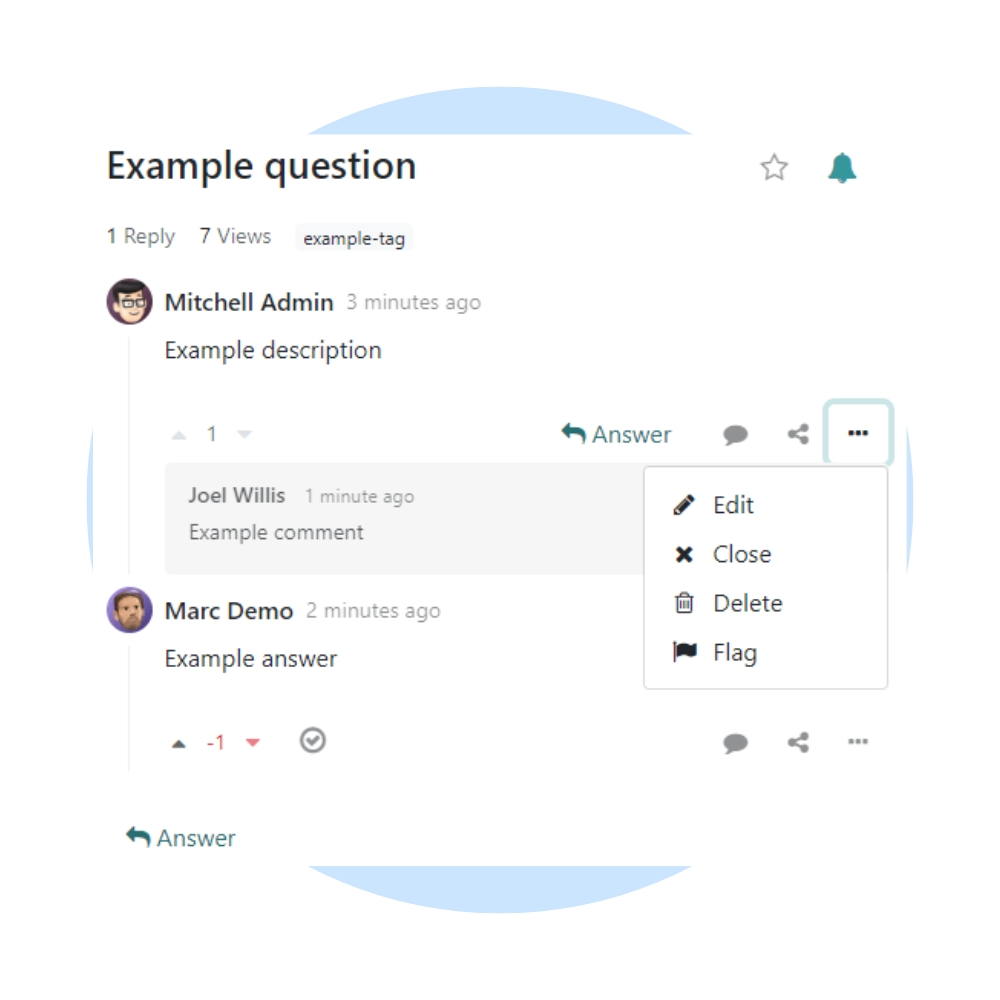
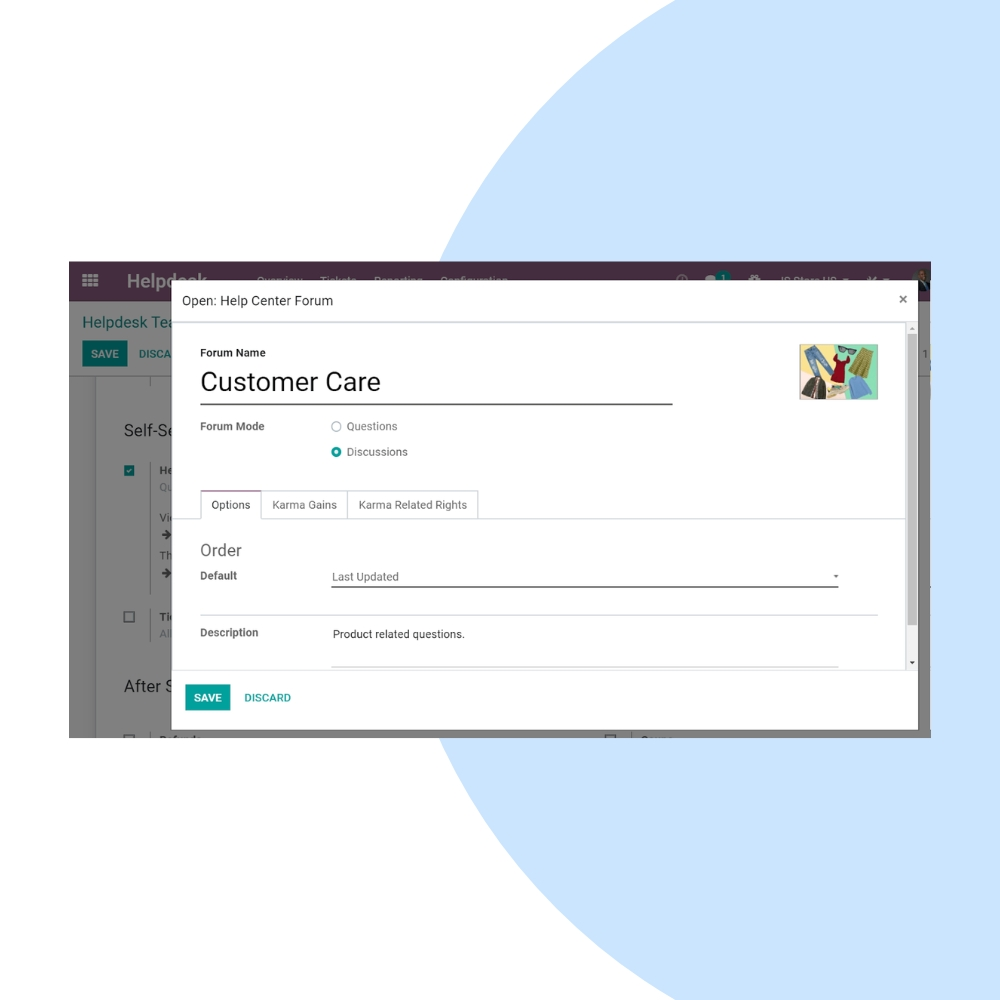
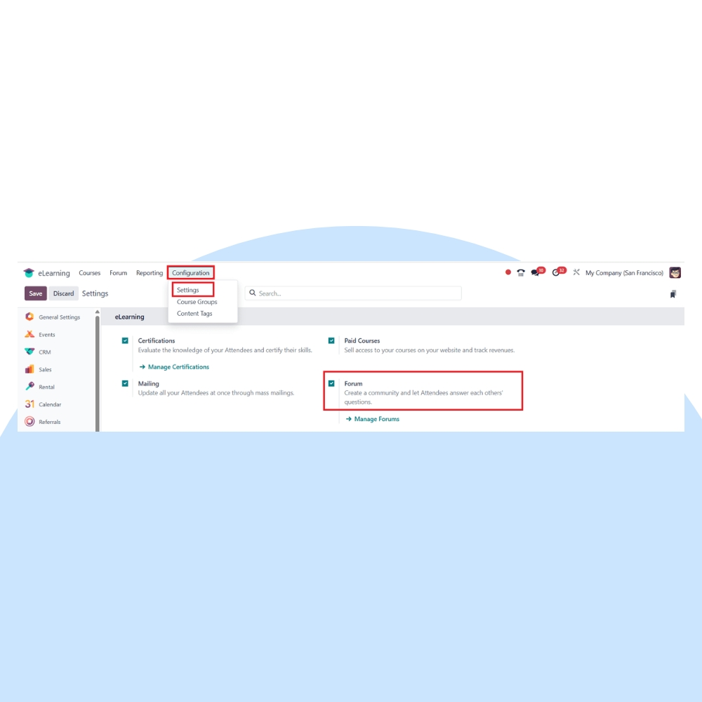

Create interactive communities with Odoo Forum. We help businesses build discussion forums, customer communities, and knowledge-sharing platforms that improve engagement, support, and brand trust.
We configure Odoo Forum to match your community goals, moderation rules, and engagement strategy. Integrate forums seamlessly with Website, CRM, Helpdesk, and Blog.


Our implementation ensures your forum is easy to manage, engaging for users, and structured to encourage meaningful discussions.
Enable open discussions and Q&A formats.
Reward helpful members with points and badges.
Keep discussions clean and on-topic.
Forum content boosts organic search traffic.
Turn discussions into a searchable knowledge hub.
Reduce support load with community-driven answers.
We help you grow and optimize your community, improve engagement, and turn discussions into long-term value for your business.
